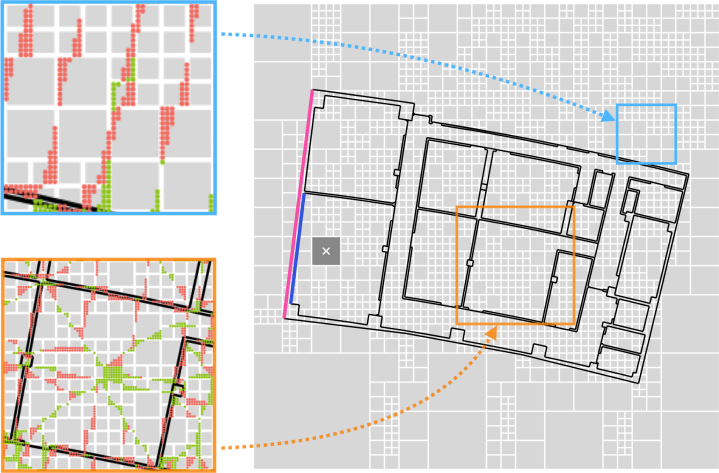

ANNF
A novel data structure enables an look-up of the nearest geometric elements.

Citation
Please cite the following publication when using this project in an academic context:
FP-Loc: Lightweight and Drift-free Floor Plan-assisted LiDAR Localization
L. Gao, L. Kneip
International Conference on Robotics and Automation (ICRA), 2022
[Arxiv] [Code
and Data]